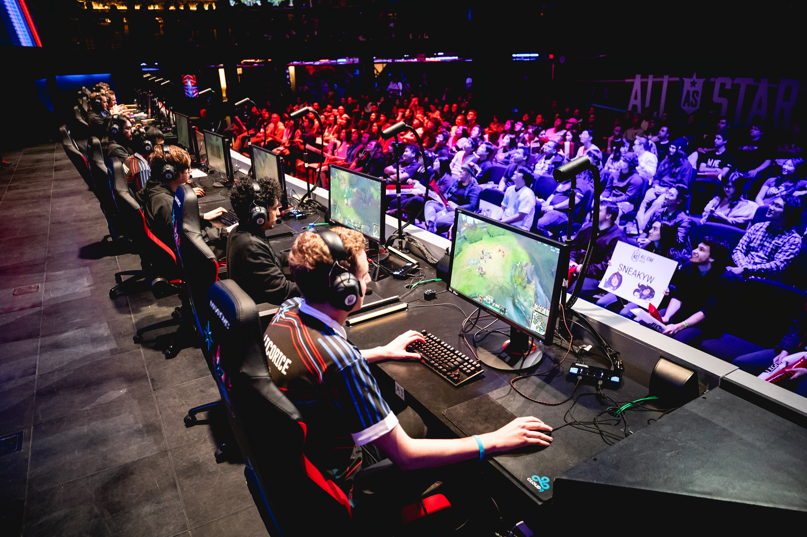

История и развитие киберспорта
У киберспорта нет единой истории создания. Он развивался постепенно, распространяясь вместе с совершенствующимися технологиями. Большое влияние на развитие оказала индустрия игровых автоматов. Аркадные игры предлагали соревноваться в количестве набранных очков. Своим происхождением виртуальный спорт был обязан встроенным в аппараты рейтингам: каждый игрок так или иначе хотел оказаться в списке лучших.

Первая попытка проследить игровые достижения была предпринята в 1981 г. Уолтером Дейем. Он стал первым в мире киберспорта, кто организовал учет истории результатов местных игроков. Придуманная им сетка стала прообразом «национальной таблицы рекордов». А в 1983 г. Дей сформировал собственную команду, которую представлял на различных соревнованиях. Он также активно участвовал в продвижении игровых турниров, благодаря чему появились ТВ-шоу о виртуальном спорте.
«
Киберспорт – это профессия или развлечение?» – вот вопрос,
которым задаются тысячи людей. Многим сложно понять, как щелкание клавиатурой и мышкой
смогло стать прибыльным занятием и получило статус спортивной дисциплины.
Взглянем на историю развития киберспорта – это поможет понять путь его становления.
Первый киберспортивный турнир – его прародитель – состоялся аж в 1972 году. 24 студента Стэнфордского университета соревновались в игре Spacewar.
Одновременно играют два человека – выигрывает тот, кто собьет космический корабль противника.
Победитель получил подписку на журнал Rolling Stone.
Рост и расширение индустрии компьютерных игр пришелся на 1990-е годы – тогда постоянно проводились небольшие
локальные турниры и соревнования, подобные самому первому событию в мире киберспорта.

Восемь лет спустя (в 1998 году) разработчик Atari провел следующее крупное
киберсобытие – соревнование по Space Invaders, участие в котором приняли
несколько тысяч человек.
Первый массовый турнир «Red Annihilation» был проведен в 1997 году – его организовал Эйнджел Муньен, игроки сражались в Quake.
Он проходил в несколько этапов – сначала 2000 американских игроков соревновались в формате онлайн, а уже потом 16 финалистов прибыли в Антланту,
на выставку Electronic Entertainment Expo. Впервые трансляция активно велась в интернете, победитель получил
Ferrari 328 GTS – им стал Деннис Фонг.
Именно после первого турнира Муньезом была создана первая профессиональная лига киберспорта Cyberathlete Professional League (CPL).
В двухтысячных началось становление интернета – тогда свет увидели такие известные продукты, как Старкрафт или Контрстрайк.
В 2000 году стартовал турнир World Cyber Games – первый призовой фонд составил 600 тысяч долларов, а спонсором выступил
Samsung.
Постепенно количество лиг росло, появлялись новые турниры – расширялся и призовой фонд. Все это неотрывно связано с улучшением качества компьютеров и появлением новых популярных игр.